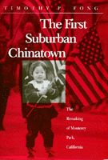

Ethnicity issues fuel internal strife as a community faces change
Ethnicity issues fuel internal strife as a community faces change


 Ethnicity issues fuel internal strife as a community faces change
Ethnicity issues fuel internal strife as a community faces change

|  |
The First Suburban ChinatownThe Remaking of Monterey Park, CaliforniaTimothy P. Fongpaper EAN: 978-1-56639-262-4 (ISBN: 1-56639-262-4) |
Donald H. Pflueger Local History Award, Historical Society of Southern California, 1999
Outstanding Book Award in the Social Sciences, Association for Asian American Studies, 1995
Monterey Park, California, only eight miles east of downtown Los Angeles, was dubbed by the media as the "First Suburban Chinatown." The city was a predominantly white middle-class bedroom community in the 1970s when large numbers of Chinese immigrants transformed it into a bustling international boomtown. It is now the only city in the United States with a majority Asian American population. Timothy P. Fong examines the demographic, economic, social, and cultural changes taking place there, and the political reactions to the change.
Fong, a former journalist, reports on how pervasive anti-Asian sentiment fueled a series of initiatives intended to strengthen "community control," including a movement to make English the official language. Recounting the internal strife and the beginnings of recovery, Fong explores how race and ethnicity issues are used as political organizing tools and weapons.
Excerpt available at www.temple.edu/tempress
"On an early morning walk to Barnes Memorial Park, one can see dozens of elderly Chinese performing their daily movement exercises under the guidance of an experienced leader. Other seniors stroll around the perimeter of the park; still others sit on benches watching the activity around them or reading a Chinese-language newspaper.
"By now children are making their way to school, their backpacks bulging with books. They talk to each other in both English and Chinese, but mostly English. Many are going to Ynez Elementary, the oldest school in town.
"When a nearby coin laundry opens its doors for business, all three television sets are turned on: one is tuned to a Spanish novella, another to a cable channel's Chinese newscast, and the third to Bryant Gumbel and the Today show.
"Up the street from the park a home with a small stone carved Buddha and several stone pagodas in the well-tended front yard is an attractive sight. The large tree that provides afternoon shade for the house has a yellow ribbon tied around its trunk, a symbol of support for American troops fighting in the Persian Gulf. On the porch an American flag is tied to a crudely constructed flagpole. Next to it, taped to the front door, Chinese characters read 'Happiness' and 'Long Life' to greet visitors.
"These sights and sounds are of interest not because they represent the routine of life in an ethnic neighborhood but because they signal the transformation of an entire city. Monterey Park, California, a rapidly growing, rapidly changing community of 60,000 residents, is located just eight miles east of downtown Los Angeles. An influx of immigrants primarily from Taiwan, Hong Kong, and the People's Republic of China has made Monterey Park the only city in the continental United States the majority of whose residents are of Asian background. According to the 1990 census, Asians make up 56 percent of the city's population, followed by Hispanics with 30 percent, and whites with 12 percent."
—From the Introduction
Preface
Introduction: A New and Dynamic Community
1. Ramona Acres to the Chinese Beverly Hills: Demographic Change
2. Enter the Dragon: Economic Change
3. "I Don't Feel at Home Anymore": Social and Cultural Change
4. Community Fragmentation and the Slow-Growth Movement
5. Controlled Growth and the Official-English Movement
6. "City with a Heart"?
7. The Politics of Realignment
8. Theoretical Perspectives on Monterey Park
Conclusion: From Marginal to Mainstream
Notes
Select Bibliography
Index
 | Timothy P. Fong teaches at the University of California, Davis, and at California State University, Hayward. |
Asian American History and Culture, edited by K. Scott Wong, Linda Trinh V�, and Cathy Schlund-Vials.
Founded by Sucheng Chan in 1991, the Asian American History and Culture, series has sponsored innovative scholarship that has redefined, expanded, and advanced the field of Asian American studies while strengthening its links to related areas of scholarly inquiry and engaged critique. Like the field from which it emerged, the series remains rooted in the social sciences and humanities, encompassing multiple regions, formations, communities, and identities. Extending the vision of founding editor Sucheng Chan and emeriti editor Michael Omi and David Palumbo-Liu, series editors K. Scott Wong, Linda Trinh V�, and Cathy Schlund-Vials continue to develop a foundational collection that embodies a range of theoretical and methodological approaches to Asian American studies.
© 2015 Temple University. All Rights Reserved. This page: http://www.temple.edu/tempress/titles/997_reg.html.